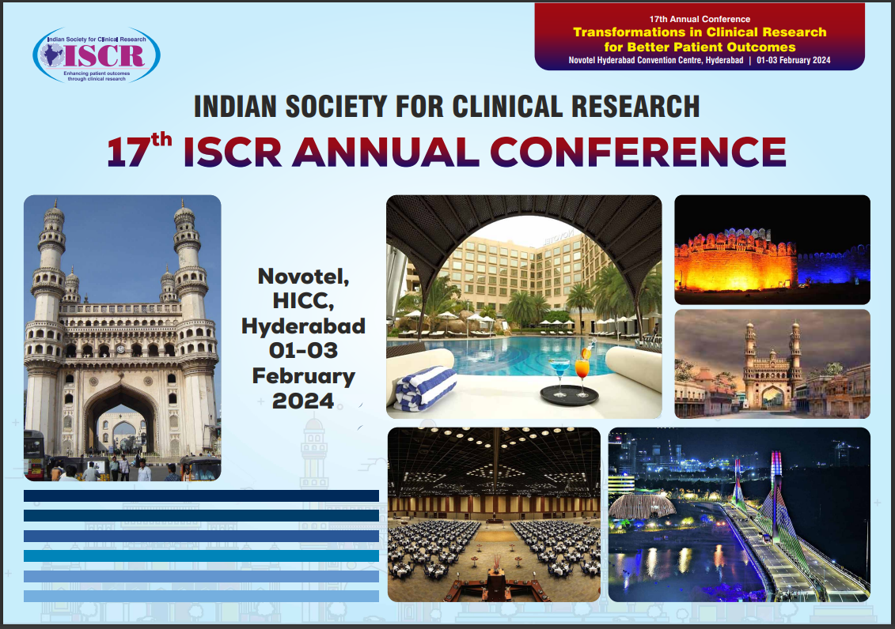
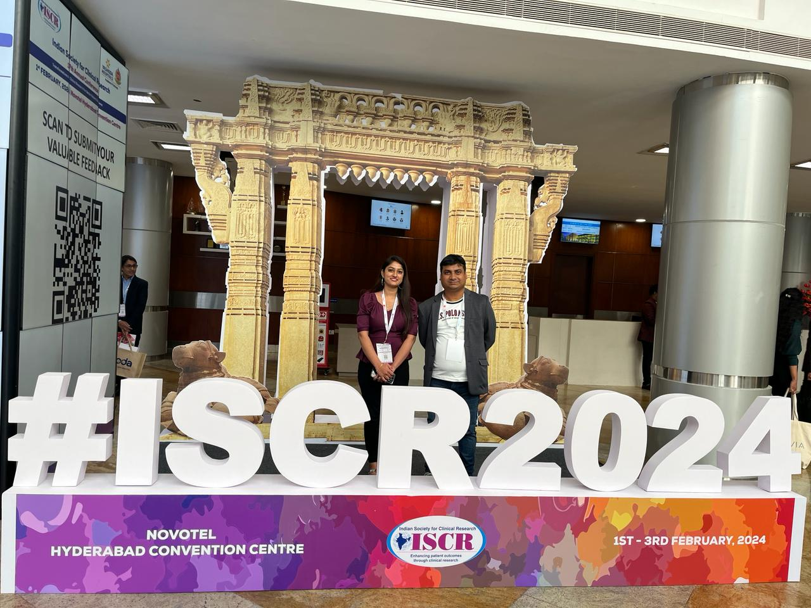
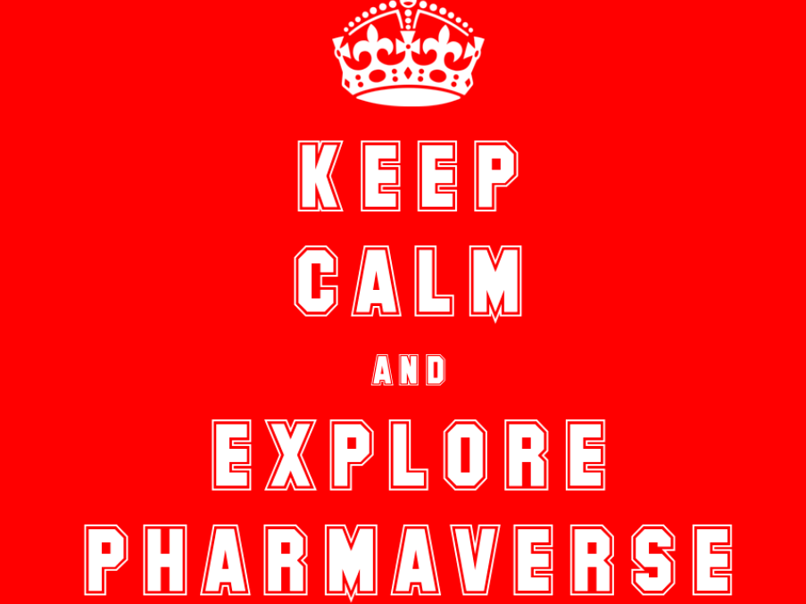

ISCR 17th Annual Conference 2024

Indian Society for Clinical Research (ISCR), launched in June 2005, is a not-for-profit professional association of all stakeholders in clinical research.
ISCR hosted its 17th Annual Conference 2024 at Hotel Novotel HICC, Hyderabad, INDIA on the theme Transformations in Clinical Research For Better Patient Outcomes, with Pre-Conference Workshops held on February 1, 2024 (Thursday) and two-day main Conference held on February 02 & 03, 2024 (Friday-Saturday), which were attended by over 800 delegates from academic institutions, ethics committees, bio-pharmaceutical industry, government, patient organizations and clinical research organizations.
Session Recap
I had the privilege to present in front of 100+ delegates across the industry ranging from freshers to seasoned clinical professionals during ISCR 17th Annual Conference 2024 on the topic Travese the PHARMAVERSE: ouR Insights in the Biostatistics and Statistical Programming|02-Feb-2024 track including many more interesting presentations highlighting their experience with R submissions using various open source technologies.
The session consisted of three presentations, namely:
A real world insight and navigation on bridging FDA submission using R by Soumitra Kar & Mahendran Venkatachalam
Traverse the ‘PHARMAVERSE’ : ouR insights by Pooja Kumari
Package in CRAN : {admiralvaccine} by Divya Kanagaraj and Arjun R
It was inaugurated with great enthusiast and sharing insights on Opportunities/Challenges of using different technologies like R in regulatory Submissions by the session chair Soumitra Kar. He along with his co-presenter Mahendran Venkatachalam shared their experience of submitting first R-based Submission to FDA. The presentation was a perfect combination of inspiring storytelling, climax and thrill to address FDA review comments and releasing the blockbuster R submission by Novo-Nordisk creating history.
This was followed by my presentation on Travese the PHARMAVERSE: ouR Insights, wherein I gave a brief introduction to PHARMAVERSE universe and how we operate. Many R enthusiasts are well versed with the evolution of {admiral} and its propensity to develop ADaMs. However, very few know about other packages such as {metacore}, {metatools}, {xportr} which are developed considering the regulatory agency guidelines and can aid the process of creating ADaM datasets proficiently. I took the opportunity to supercharge the process knowledge of creating submission ready ADaMs covering end-to-end process using these PHARMAVERSE packages along with some to R submission success stories.
Next presentation was on {admiralvaccine}, an extension package of {admiral} specific to vaccine studies under the PHARMAVERSE universe by Divya Kanagaraj and Arjun R. They shared their exciting journey of developing the package since inception to final CRAN release from a developer’s perspective. They also talked about the collaborative effort that went into its successful release.
Overall session was concluded with an interactive Q&A wherein all the presenters and presentations were applauded by the audience as well as the Scientific Committee members. It was an enriching session to witness the growth of R programming leading to R submissions in Clinical Research & Pharmaceutical Industry.

Key Takeaways
The two-day conference was full of great learning and meeting esteemed Clinical Pharmaceutical Industry veterans/newbies discussing on trending topics such as Optimizing Clinical Research through effective collaboration between Statisticians and Statistical Programmers, Can new technologies (AI/ML/IOT) a threat or blessing for Biostatisticians and Statistical Programmers? through Panel discussions.
The power of technology coupled with domain expertise can make us deliver quality results faster and serve the world with disease-free healthy life.
Why should we attend Conferences?
Conferences are the best place to Connect, Collaborate and Communicate your thoughts with like-minded tribe.
Biostatistics and Clinical Statistical Programming industry is growing and adopting open source technologies with great acceptance. As an individual we can contribute to communities like PHARMAVERSE to enhance our end-to-end process knowledge, develop programming skills and contribute to a revolutionary concept.
It gives you a platform to strengthen your presentation as well as self-branding skills.
Gallery


Last updated
2024-05-02 14:32:39.938025
Details
Reuse
Citation
BibTeX citation:
@online{kumari2024,
author = {Kumari, Pooja},
title = {ISCR 17th {Annual} {Conference} 2024},
date = {2024-02-26},
url = {https://pharmaverse.github.io/blog/posts/2024-02-14_iscr_conference/iscr_conference.html},
langid = {en}
}
For attribution, please cite this work as:
Kumari, Pooja. 2024. “ISCR 17th Annual Conference 2024.”
February 26, 2024. https://pharmaverse.github.io/blog/posts/2024-02-14_iscr_conference/iscr_conference.html.